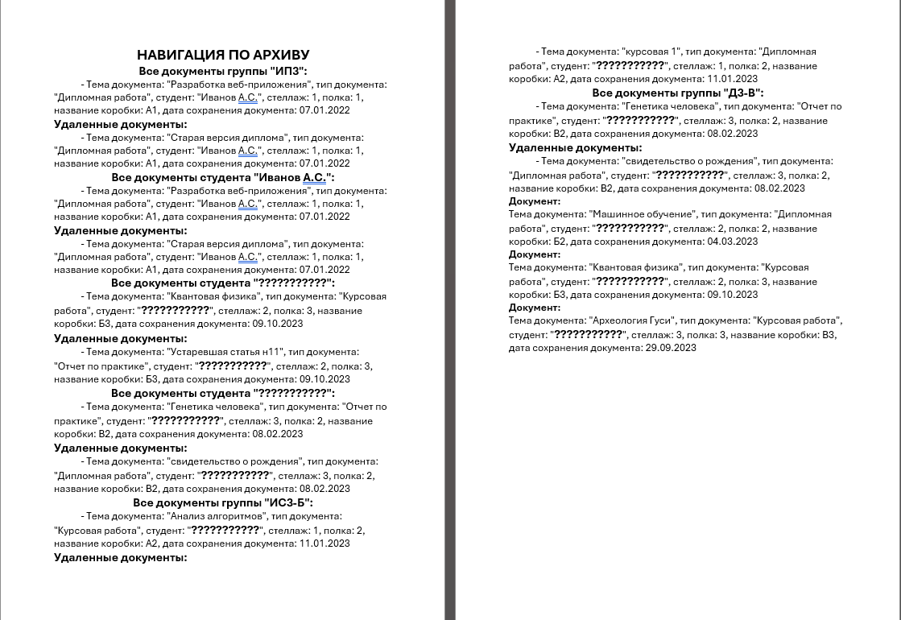

Раздел «Печати» (меню «Печати» в главном окне) предназначен для формирования и вывода на печать различных отчётных документов на основе данных из архива.

Рис. 1. Пункт меню «Печати» и его подменю
Назначение раздела
В разделе «Печати» собраны все функции для создания документов Microsoft Word (формат `.docx`) на основе данных, хранящихся в программе. Сформированные файлы можно сохранить на диск или сразу отправить на печать.
Доступные отчёты
| Пункт меню | Что формируется | Где доступен |
|---|---|---|
| Получить данные по выбранному студенту (2.5.1) |
Личное дело студента — заполнение шаблона (ФИО, специализация, год поступления, год отчисления, количество документов, срок хранения 75 лет) | Разделы со студентами |
| Получить опись по (не удаленным) дипломным работам выбранной группы (2.5.2) |
Опись дипломных работ для группы (таблица с № п/п, ФИО студента, ФИО руководителя, тема диплома) | Разделы «Группы», «Студенты», «Коробки» |
| Составление файла навигации по архиву (2.5.3) |
Навигационный файл — список документов для физического поиска с указанием стеллажа, полки, группы и года | Любой раздел (добавление элементов по контексту) |
Общий принцип работы
Все функции печати работают по единому принципу:
1. Выделите объект (студента, группу, документ) в соответствующем разделе.
2. Выберите пункт меню «Печати» → нужный отчёт.
3. Укажите место сохранения файла в диалоговом окне.
4. Программа формирует документ Word и сохраняет его.
5. Подтвердите печать — документ отправится на принтер по умолчанию.
Требования для работы печати
Для корректной работы функций печати необходимо:
— Наличие установленного Microsoft Word (или другого приложения, поддерживающего открытие и печать файлов `.docx`).
— Для печати личного дела студента — наличие файла шаблона «Опись Личные_дела_студентов.DOCX» в папке с программой.
— Для печати описи дипломных работ — наличие в справочнике типов документов значения «Дипломная работа».
— Наличие установленного принтера по умолчанию (если требуется автоматическая печать).
Примеры использования

Рис. 2. Пример сформированного документа (навигационный файл)
Пример 1: Сотруднику архива нужно найти личное дело отчисленного студента. Он выделяет студента в разделе «Студенты» и формирует навигационный файл, где указано точное место хранения (стеллаж, полка, коробка).
Пример 2: Перед защитой дипломов нужно подготовить опись для государственной экзаменационной комиссии. Выбирается группа, и программа формирует таблицу со списком всех дипломных работ.
— Если шаблон для личного дела не найден — проверьте наличие файла «Опись Личные_дела_студентов.DOCX» в папке с программой.
— Если опись дипломных работ пуста — убедитесь, что в группе есть документы с типом «Дипломная работа».
— Если не открывается окно печати — проверьте, установлен ли принтер по умолчанию.
Навигация по подразделам:
| Раздел | Описание |
|---|---|
| 2.5.1. Печать личного дела студента | Формирование личного дела по шаблону, заполнение полей данными из БД |
| 2.5.2. Печать описи дипломных работ по группе | Создание таблицы со списком дипломных работ выбранной группы |
| 2.5.3. Создание навигационного файла по архиву | Сбор и генерация документа с информацией о местах хранения документов |
| 2.5.3.1. Добавление выбранного документа | Добавление в отчёт конкретного документа |
| 2.5.3.2. Добавление всех документов студента | Добавление всех документов выбранного студента |
| 2.5.3.3. Добавление всех документов группы | Добавление всех документов всех студентов группы |
| 2.5.3.4. Генерация и сохранение файла | Создание итогового документа Word и предложение печати |